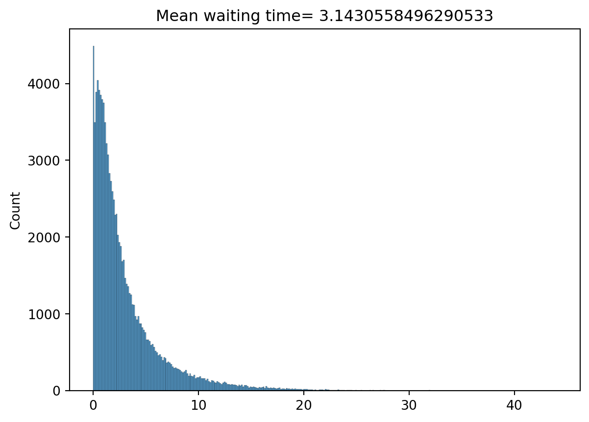
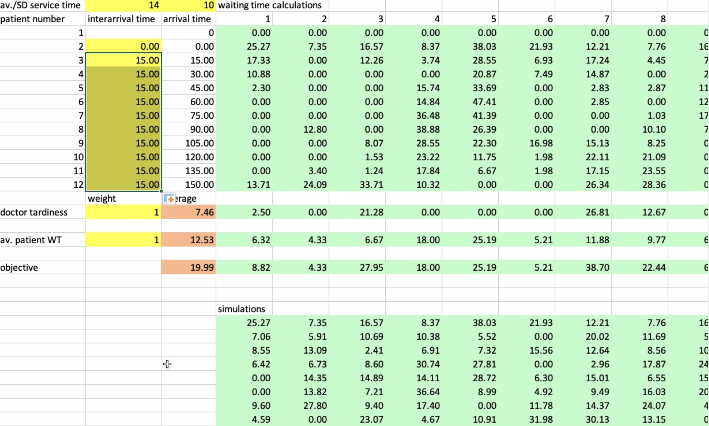
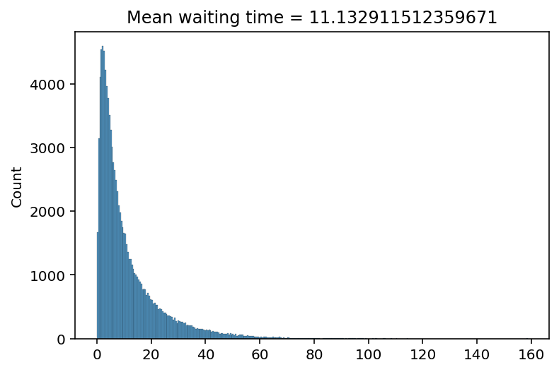
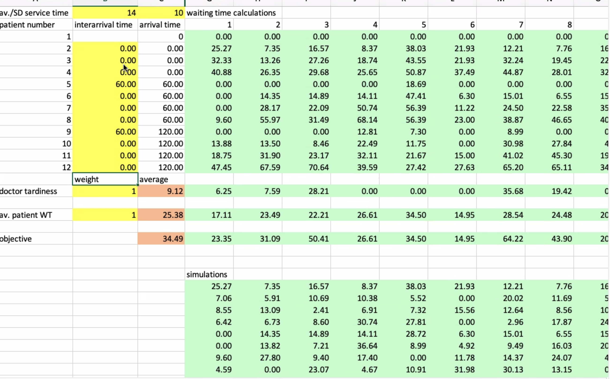
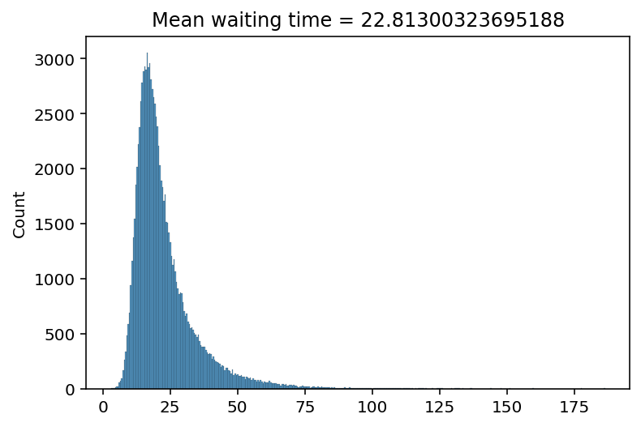

## Libraries
import numpy as np
from matplotlib import pyplot as plt
import seaborn as snsScheduling Simulation
Setup
Load libraries.
Define functions:
logn_mean_lns(m, s)transforms a mean and standard deviation from a lognormal distribution to parameters for a normal distribution. This is necessary when using the random lognormal sampling function. It uses a normal mean and standard deviation as inputs. However, for our simulation we define a mean and standard deviations from a lognormal distribution:lnm = lognormal mean
lns = lognormal standard deviation
Returns an array with normal mean and standard deviation
generate_logn_sts(s, n, mu, lns)generates a matrix with service times randomly selected from a lognormal distribution:s = number of rows
n = number of columns
lnm = lognormal mean
lns = lognormal standard deviation
Returns an s x n matrix with random service times.
generate_client(cts, sts, pct, ns=0)generates one client. A client is represented by a client type and a service time:cts is an array with randomly generated client types. Used for sampling.
sts is an array with randomly generated service times. Used for sampling.
pct is an array with distributions for samplling client types.
ns is a fraction of no-shows. When a client is a no-show the service time will be set to zero.
Returns an array with client type and service time (zero when no-show).
simulate(iats, cts, sts, pct, ns, logs=False)simulates one schedule:iats is an array with interarrival times for each client
cts is an array with randomly generated client types. Used for sampling.
sts is an array with randomly generated service times. Used for sampling.
pct is an array with distributions for samplling client types.
ns is a fraction of no-shows. When a client is a no-show the service time will be set to zero.
logs a boolean flag: should results be printed (
True) or not (False)?
Returns an array of waiting times.
simulate_crn(iats, cts, sts, logs=False)simulates one schedule using common random numbers.:iats is an array with interarrival times for each client
cts is an array with randomly generated client types. Must have same length as iats.
sts is an array with randomly generated service times (with zeros for no-shows). Must have same length as iats.
logs a boolean flag: should results be printed (
True) or not (False)?
Returns an array of waiting times.
transform_iats_schedule(iats: list[int], d: int, T: int)transforms a list with inter-arrival times per client to a schedule with clients per time slot.:iats is a list with interarrival times per client as integers
d is the length of a time slot
T is the number of intervals in the schedule
Returns an array of number of clients.
transform_schedule_iats(schedule: list[int], d: int)transforms a schedule with clients per time slot to a list with inter-arrival times per client :- schedule is a list with number of clients per time slot as integers
- d is the length of a time slot
Returns an array of inter-arrival times.
## Functions
### Lognormal mean and lns / see: https://en.wikipedia.org/wiki/Log-normal_distribution
def logn_mean_lns(lnm, lns):
sigma = np.sqrt(np.log(1 + (lns/lnm)**2))
mu = np.log(lnm**2 / np.sqrt(lnm**2 + lns**2))
return np.array([mu, sigma])
### Random lognormal service times generator
def generate_logn_sts(s, n, lnm, lns):
sts = np.random.lognormal(mean = logn_mean_lns(lnm, lns)[0], sigma=logn_mean_lns(lnm, lns)[1], size=s * n)
return np.reshape(sts, (s, n))
##############
#### TEST ####
generate_logn_sts(5, 5, 14, 10)
generate_logn_sts(1, 8, 14, 10)
##############
### Client generator
def generate_client(cts, sts, pct, ns=0):
ct = np.random.choice(cts, size = 1, p=pct)[0] # generate random client type
st = np.random.binomial(n=1, p=1-ns)*np.random.choice(sts, size = 1)[0] # generate random service time / if no-show -> st = 0
return np.array([ct, st])
### Simulation
### ATTENTION: handling of emergency patients has not yet been implemented
def simulate(iats, cts, sts, pct, ns, logs=False):
wt = 0 # initial value waiting time
wts = [] # array for saving waiting times
for i in range(len(iats)):
if(i != 0): # don't calculate waiting time for first client in schedule
wt = max(0, tis - iats[i]) # calculate waiting time
ct, st = generate_client(cts, sts, pct, ns) # client type and service time
tis = wt + st # calculate time in system
wts.append(wt)
if(logs): print(iats[i], wt, st, tis, ct)
return np.array(wts)
def simulate_crn(iats, cts, sts, logs=False):
wt = 0 # initial value waiting time
wts = [] # array for saving waiting times
for i in range(len(iats)):
if(i != 0): # don't calculate waiting time for first client in schedule
wt = max(0, tis - iats[i]) # calculate waiting time
ct = cts[i]# client type
st = sts[i]# service time
tis = wt + st # calculate time in system
wts.append(wt)
if(logs): print(iats[i], wt, st, tis, ct)
return np.array(wts)
def transform_iats_schedule(iats: list, d: int, T: int):
iats = np.array(iats)
ats = np.cumsum(iats)
sats = np.arange(d*(T+1),step = d)
schedule = np.histogram(ats, bins=sats)
return schedule
##############
#### TEST ####
transform_iats_schedule([0, 0 ,30, 0, 60, 0, 0, 0, 60, 0, 0, 0], d = 15, T = 11)
##############
def transform_schedule_iats(schedule: list, d: int):
schedule = np.array(schedule)
T = schedule.size
sats = np.arange(d*T,step = d)
ats = np.repeat(sats, schedule)
iats = np.diff(ats)
iats = np.insert(iats, 0, ats[0])
return iats
##############
#### TEST ####
schedule = transform_iats_schedule([0, 0 ,30, 0, 60, 0, 0, 0, 60, 0, 0, 0], d = 15, T = 11)[0]
transform_schedule_iats(schedule, d = 15)
##############array([ 0, 0, 30, 0, 60, 0, 0, 0, 60, 0, 0, 0])Configure global simulation parameters.
## Variables
cts = np.array([0, 1]) # client types -> normal or emergency
pct = np.array([1, 0]) # distribution of client types -> normal or emergency
# sts = np.array([14, 14, 14, 15, 16]) # service times - for simple numerical testing
# sts = np.random.poisson(lam=14, size=1000) - using poisson distribution
ns = 0.1 # Percentage of no-shows
nsims = 100000 # number of simulations
logs = FalseRun simulation 1

Configure parameters.
# configure parameters
lnm = 14
lns = 5
sts = generate_logn_sts(1, 1000, lnm, lns)[0] # sampling population for array service times
iats = np.array([0, 15, 15, 15, 15, 15, 15, 15, 15, 15, 15, 15], dtype=object) # inter-arrival times
nsims = nsims # number of simulations
ctsm = np.random.choice(cts, size = (nsims * len(iats)), p=pct).reshape((nsims, len(iats))) # client types matrix
stsm = np.random.lognormal(mean = logn_mean_lns(lnm, lns)[0], sigma=logn_mean_lns(lnm, lns)[1], size=(nsims * len(iats))).reshape((nsims, len(iats))) # service times matrix
nsm = np.random.binomial(n=1, p=1-ns, size = nsims * len(iats)).reshape((nsims, len(iats))) # no-shows matrix
stsm = stsm * nsm # service times matrix with no-shows
simres = [] # array for saving simulation resultsRun simulations.
# run simulations
for s in range(nsims):
# experiment = simulate(iats, cts, sts, pct, ns, logs=logs)
experiment = simulate_crn(iats, ctsm[s], stsm[s], logs=logs)
simres.append(experiment.mean())
mwt = np.array(simres).mean()Plot histogram of waiting times
# plot histogram of waiting times
fig = sns.histplot(simres)
fig.set(title=f"Mean waiting time= {mwt}")[Text(0.5, 1.0, 'Mean waiting time= 3.1058995101187348')]
Run simulation 2

Configure parameters.
# Configure parameters
lnm = 14
lns = 10
sts = generate_logn_sts(1, 1000, lnm, lns)[0] # sampling population for array service times
iats = np.array([0, 0, 15, 15, 15, 15, 15, 15, 15, 15, 15, 15]) # inter-arrival times
nsims = nsims # number of simulations
ctsm = np.random.choice(cts, size = (nsims * len(iats)), p=pct).reshape((nsims, len(iats))) # client types matrix
stsm = np.random.lognormal(mean = logn_mean_lns(lnm, lns)[0], sigma=logn_mean_lns(lnm, lns)[1], size=(nsims * len(iats))).reshape((nsims, len(iats))) # service times matrix
nsm = np.random.binomial(n=1, p=1-ns, size = nsims * len(iats)).reshape((nsims, len(iats))) # no-shows matrix
stsm = stsm * nsm # service times matrix with no-shows
simres = [] # array for saving silnmlation resultsRun simulations.
# run simulations
for s in range(nsims):
# experiment = simulate(iats, cts, sts, pct, ns, logs=logs)
experiment = simulate_crn(iats, ctsm[s], stsm[s], logs=logs)
simres.append(experiment.mean())
mwt = np.array(simres).mean()Plot histogram of waiting times.
# plot histogram of waiting times
fig = sns.histplot(simres)
fig.set(title=f"Mean waiting time = {mwt}")[Text(0.5, 1.0, 'Mean waiting time = 11.204205279142906')]
Run simulation 3

Configure parameters.
# configure parameters
lnm = 14
lns = 10
sts = generate_logn_sts(1, 1000, lnm, lns)[0] # sampling population for array service times
iats = np.array([0, 0, 0, 0, 60, 0, 0, 0, 60, 0, 0, 0]) # inter-arrival times
nsims = nsims # number of simulations
simres = [] # array for saving simulation resultsRun simulations.
# run simulations
for s in range(nsims):
# experiment = simulate(iats, cts, sts, pct, ns, logs=logs)
experiment = simulate_crn(iats, ctsm[s], stsm[s], logs=logs)
simres.append(experiment.mean())
mwt = np.array(simres).mean()Plot histogram of waiting times
# plot histogram of waiting times
fig = sns.histplot(simres)
fig.set(title=f"Mean waiting time = {mwt}")[Text(0.5, 1.0, 'Mean waiting time = 22.804763207372968')]